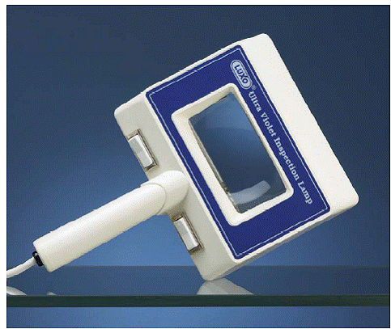

| 16401 HANDHELD UV MAGNIFIERS | |||
|  | |||
|
Perfect for inspection of conformal coatings. Coatings glow brilliantly under UV black illumination, especially when magnified through a five-diopter (2.25x) optical-quality glass lens. Unique combination of (2) 4W UV black bulbs and (2) 4W fluorescent white bulbs is also perfect for inspection of welds, solder joints, flux residues and hairline stress cracks. Additional applications include inspection of surfaces and finishes in fields such as criminology, museum and artwork restorations, document authenticity, leak detection, currency verification and gemstone and mineral inspection. Wide rectangular 4” x 2” viewing area. Color: Grey Luxo
|
|||